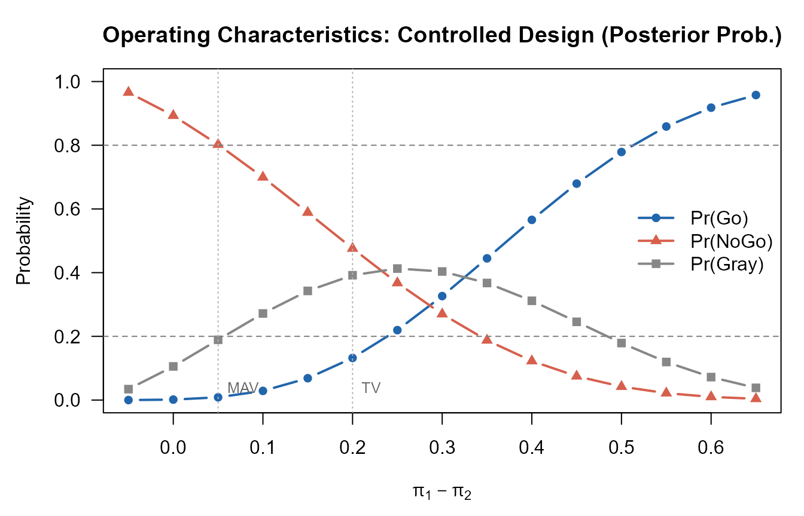
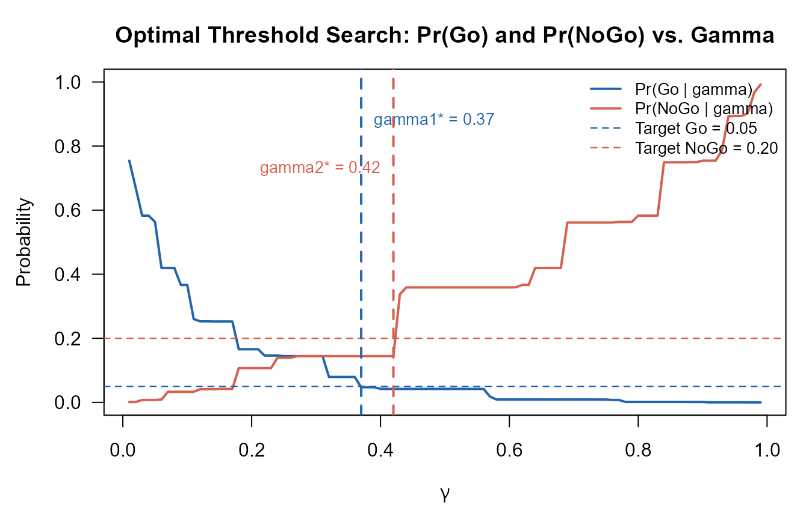

Motivating Scenario
We use a hypothetical Phase IIa proof-of-concept (PoC) trial in moderate-to-severe rheumatoid arthritis (RA). The investigational drug is compared with placebo in a 1:1 randomised controlled trial with patients per arm.
Endpoint: ACR20 response rate (proportion of patients achieving improvement in ACR criteria).
Clinically meaningful thresholds (posterior probability):
- Target Value (TV) = 0.20 (treatment–control difference)
- Minimum Acceptable Value (MAV) = 0.05
Null hypothesis threshold (predictive probability): .
Decision thresholds: (Go), (NoGo).
Observed data (used in Sections 2–4): responders out of (treatment); responders out of (control).
1. Bayesian Model: Beta-Binomial Conjugate
1.1 Prior Distribution
Let denote the true response rate in group (: treatment, : control). We model the number of responders as
and place independent Beta priors on each rate:
where and are the shape parameters.
The Jeffreys prior corresponds to , giving a weakly informative, symmetric prior on . The uniform prior corresponds to .
1.2 Posterior Distribution
By conjugacy of the Beta-Binomial model, the posterior after observing responders among patients is
where the posterior shape parameters are
The posterior mean and variance are
1.3 Posterior of the Treatment Effect
The treatment effect is . Since the two groups are independent, follows the distribution of the difference of two independent Beta random variables:
There is no closed-form CDF for , so the posterior probability
is evaluated by the convolution integral implemented in
pbetadiff():
where
is the Beta CDF and
is the Beta PDF. This one-dimensional integral is evaluated by adaptive
Gauss-Kronrod quadrature via stats::integrate().
2. Posterior Predictive Probability
2.1 Beta-Binomial Predictive Distribution
Let be future trial counts with future patients. Integrating out over its Beta posterior gives the Beta-Binomial predictive distribution:
where is the Beta function.
2.2 Posterior Predictive Probability of Future Success
The posterior predictive probability that the future treatment difference exceeds is
This double sum over all
outcome combinations is evaluated exactly by
pbetabinomdiff().
3. Study Designs
3.1 Controlled Design
Standard parallel-group RCT with observed data from both arms. The posterior shape parameters for group are
and the posterior probability is
computed via pbetadiff().
Posterior probability at TV and MAV:
# P(pi1 - pi2 > TV | data)
p_tv <- pbayespostpred1bin(
prob = 'posterior', design = 'controlled', theta0 = 0.20,
n1 = 12, n2 = 12, y1 = 8, y2 = 3,
a1 = 0.5, b1 = 0.5, a2 = 0.5, b2 = 0.5,
m1 = NULL, m2 = NULL, z = NULL,
ne1 = NULL, ne2 = NULL, ye1 = NULL, ye2 = NULL, ae1 = NULL, ae2 = NULL,
lower.tail = FALSE
)
# P(pi1 - pi2 > MAV | data)
p_mav <- pbayespostpred1bin(
prob = 'posterior', design = 'controlled', theta0 = 0.05,
n1 = 12, n2 = 12, y1 = 8, y2 = 3,
a1 = 0.5, b1 = 0.5, a2 = 0.5, b2 = 0.5,
m1 = NULL, m2 = NULL, z = NULL,
ne1 = NULL, ne2 = NULL, ye1 = NULL, ye2 = NULL, ae1 = NULL, ae2 = NULL,
lower.tail = FALSE
)
cat(sprintf("P(theta > TV | data) = %.4f -> Go criterion (>= %.2f): %s\n",
p_tv, 0.80, ifelse(p_tv >= 0.80, "YES", "NO")))
#> P(theta > TV | data) = 0.8517 -> Go criterion (>= 0.80): YES
cat(sprintf("P(theta <= MAV | data) = %.4f -> NoGo criterion (>= %.2f): %s\n",
1 - p_mav, 0.20, ifelse((1 - p_mav) >= 0.20, "YES", "NO")))
#> P(theta <= MAV | data) = 0.0347 -> NoGo criterion (>= 0.20): NO
cat(sprintf("Decision: %s\n",
ifelse(p_tv >= 0.80 & (1 - p_mav) < 0.20, "Go",
ifelse(p_tv < 0.80 & (1 - p_mav) >= 0.20, "NoGo",
ifelse(p_tv >= 0.80 & (1 - p_mav) >= 0.20, "Miss", "Gray")))))
#> Decision: GoPosterior predictive probability (future Phase III: ):
p_pred <- pbayespostpred1bin(
prob = 'predictive', design = 'controlled', theta0 = 0.10,
n1 = 12, n2 = 12, y1 = 8, y2 = 3,
a1 = 0.5, b1 = 0.5, a2 = 0.5, b2 = 0.5,
m1 = 40, m2 = 40, z = NULL,
ne1 = NULL, ne2 = NULL, ye1 = NULL, ye2 = NULL, ae1 = NULL, ae2 = NULL,
lower.tail = FALSE
)
cat(sprintf("Predictive probability (m1 = m2 = 40) = %.4f\n", p_pred))
#> Predictive probability (m1 = m2 = 40) = 0.9053Vectorised computation over all possible outcomes:
The function accepts vectors for y1 and y2,
enabling efficient computation of the posterior probability for every
possible outcome pair
.
grid <- expand.grid(y1 = 0:12, y2 = 0:12)
p_all <- pbayespostpred1bin(
prob = 'posterior', design = 'controlled', theta0 = 0.20,
n1 = 12, n2 = 12, y1 = grid$y1, y2 = grid$y2,
a1 = 0.5, b1 = 0.5, a2 = 0.5, b2 = 0.5,
m1 = NULL, m2 = NULL, z = NULL,
ne1 = NULL, ne2 = NULL, ye1 = NULL, ye2 = NULL, ae1 = NULL, ae2 = NULL,
lower.tail = FALSE
)
# Show results for a selection of outcome pairs
sel <- data.frame(y1 = grid$y1, y2 = grid$y2, P_gt_TV = round(p_all, 4))
head(sel[order(-sel$P_gt_TV), ], 10)
#> y1 y2 P_gt_TV
#> 12 11 0 1.0000
#> 13 12 0 1.0000
#> 26 12 1 1.0000
#> 11 10 0 0.9998
#> 39 12 2 0.9998
#> 25 11 1 0.9997
#> 10 9 0 0.9992
#> 52 12 3 0.9992
#> 24 10 1 0.9982
#> 38 11 2 0.99823.2 Uncontrolled Design (Single-Arm)
When no concurrent control arm is enrolled, a hypothetical control responder count is specified from historical knowledge. The control posterior is then
where
is the hypothetical control sample size and
is the assumed number of hypothetical responders
().
Only the treatment arm data
are observed;
is set to NULL.
# Hypothetical control: z = 2 responders out of n2 = 12
p_unctrl <- pbayespostpred1bin(
prob = 'posterior', design = 'uncontrolled', theta0 = 0.20,
n1 = 12, n2 = 12, y1 = 8, y2 = NULL,
a1 = 0.5, b1 = 0.5, a2 = 0.5, b2 = 0.5,
m1 = NULL, m2 = NULL, z = 2L,
ne1 = NULL, ne2 = NULL, ye1 = NULL, ye2 = NULL, ae1 = NULL, ae2 = NULL,
lower.tail = FALSE
)
cat(sprintf("P(theta > TV | data, uncontrolled, z=2) = %.4f\n", p_unctrl))
#> P(theta > TV | data, uncontrolled, z=2) = 0.9338Effect of the hypothetical control count: varying shows the sensitivity to the assumed control rate.
z_seq <- 0:12
p_z <- sapply(z_seq, function(z) {
pbayespostpred1bin(
prob = 'posterior', design = 'uncontrolled', theta0 = 0.20,
n1 = 12, n2 = 12, y1 = 8, y2 = NULL,
a1 = 0.5, b1 = 0.5, a2 = 0.5, b2 = 0.5,
m1 = NULL, m2 = NULL, z = z,
ne1 = NULL, ne2 = NULL, ye1 = NULL, ye2 = NULL, ae1 = NULL, ae2 = NULL,
lower.tail = FALSE
)
})
data.frame(z = z_seq, P_gt_TV = round(p_z, 4))
#> z P_gt_TV
#> 1 0 0.9968
#> 2 1 0.9787
#> 3 2 0.9338
#> 4 3 0.8517
#> 5 4 0.7297
#> 6 5 0.5760
#> 7 6 0.4099
#> 8 7 0.2558
#> 9 8 0.1350
#> 10 9 0.0571
#> 11 10 0.0177
#> 12 11 0.0034
#> 13 12 0.00023.3 External Control Design (Power Prior)
Historical or external data are incorporated via a power prior with borrowing weight . The augmented prior shape parameters are
where and are the external sample size and responder count for group . These serve as the prior for the current PoC data, yielding a closed-form posterior:
Setting corresponds to full borrowing (the external data are treated as if they came from the current trial); recovers the result from the current data alone with the original prior.
Here, external data for both arms: , , , , borrowing weights :
p_ext <- pbayespostpred1bin(
prob = 'posterior', design = 'external', theta0 = 0.20,
n1 = 12, n2 = 12, y1 = 8, y2 = 3,
a1 = 0.5, b1 = 0.5, a2 = 0.5, b2 = 0.5,
m1 = NULL, m2 = NULL, z = NULL,
ne1 = 15L, ne2 = 15L, ye1 = 5L, ye2 = 4L, ae1 = 0.5, ae2 = 0.5,
lower.tail = FALSE
)
cat(sprintf("P(theta > TV | data, external, ae=0.5) = %.4f\n", p_ext))
#> P(theta > TV | data, external, ae=0.5) = 0.6874Effect of the borrowing weight: varying (control arm only) with fixed :
# ae must be in (0, 1]; avoid ae = 0
ae_seq <- c(0.01, seq(0.1, 1.0, by = 0.1))
p_ae <- sapply(ae_seq, function(ae) {
pbayespostpred1bin(
prob = 'posterior', design = 'external', theta0 = 0.20,
n1 = 12, n2 = 12, y1 = 8, y2 = 3,
a1 = 0.5, b1 = 0.5, a2 = 0.5, b2 = 0.5,
m1 = NULL, m2 = NULL, z = NULL,
ne1 = 15L, ne2 = 15L, ye1 = 5L, ye2 = 4L, ae1 = 0.5, ae2 = ae,
lower.tail = FALSE
)
})
data.frame(ae2 = ae_seq, P_gt_TV = round(p_ae, 4))
#> ae2 P_gt_TV
#> 1 0.01 0.6735
#> 2 0.10 0.6766
#> 3 0.20 0.6797
#> 4 0.30 0.6825
#> 5 0.40 0.6851
#> 6 0.50 0.6874
#> 7 0.60 0.6896
#> 8 0.70 0.6916
#> 9 0.80 0.6934
#> 10 0.90 0.6951
#> 11 1.00 0.69674. Operating Characteristics
4.1 Definition
For given true response rates , the operating characteristics are computed by exact enumeration over all possible outcome pairs :
where
and the decision outcomes are classified as:
- Go: AND
- NoGo: AND
- Miss: AND
- Gray: neither Go nor NoGo criterion met
4.2 Controlled Design — Multiple Scenarios
oc_ctrl <- pbayesdecisionprob1bin(
prob = 'posterior',
design = 'controlled',
theta.TV = 0.20, theta.MAV = 0.05, theta.NULL = NULL,
gamma1 = 0.80, gamma2 = 0.20,
pi1 = c(0.10, 0.20, 0.30, 0.40, 0.55, 0.70),
pi2 = rep(0.10, 6),
n1 = 12, n2 = 12,
a1 = 0.5, b1 = 0.5, a2 = 0.5, b2 = 0.5,
z = NULL, m1 = NULL, m2 = NULL,
ne1 = NULL, ne2 = NULL, ye1 = NULL, ye2 = NULL, ae1 = NULL, ae2 = NULL,
error_if_Miss = TRUE, Gray_inc_Miss = FALSE
)
print(oc_ctrl)
#> Go/NoGo/Gray Decision Probabilities (Single Binary Endpoint)
#> ------------------------------------------------------------
#> Probability type : posterior
#> Design : controlled
#> Threshold(s) : TV = 0.2, MAV = 0.05
#> Go threshold : gamma1 = 0.8
#> NoGo threshold : gamma2 = 0.2
#> Sample size : n1 = 12, n2 = 12
#> Prior (Beta) : a1 = 0.5, a2 = 0.5, b1 = 0.5, b2 = 0.5
#> Miss handling : error_if_Miss = TRUE, Gray_inc_Miss = FALSE
#> ------------------------------------------------------------
#> pi1 pi2 Go Gray NoGo
#> 0.10 0.1 0.0014 0.1056 0.8930
#> 0.20 0.1 0.0287 0.2718 0.6994
#> 0.30 0.1 0.1322 0.3919 0.4760
#> 0.40 0.1 0.3264 0.4037 0.2700
#> 0.55 0.1 0.6795 0.2457 0.0748
#> 0.70 0.1 0.9180 0.0721 0.0100
#> ------------------------------------------------------------4.3 Figure: Go/NoGo/Gray Probabilities vs. True Treatment Effect
pi1_seq <- seq(0.05, 0.75, by = 0.05)
oc_grid <- pbayesdecisionprob1bin(
prob = 'posterior',
design = 'controlled',
theta.TV = 0.20, theta.MAV = 0.05, theta.NULL = NULL,
gamma1 = 0.80, gamma2 = 0.20,
pi1 = pi1_seq,
pi2 = rep(0.10, length(pi1_seq)),
n1 = 12, n2 = 12,
a1 = 0.5, b1 = 0.5, a2 = 0.5, b2 = 0.5,
z = NULL, m1 = NULL, m2 = NULL,
ne1 = NULL, ne2 = NULL, ye1 = NULL, ye2 = NULL, ae1 = NULL, ae2 = NULL,
error_if_Miss = TRUE, Gray_inc_Miss = FALSE
)
delta <- oc_grid$pi1 - 0.10 # true treatment effect
old_par <- par(mar = c(4.5, 4.5, 3, 1))
plot(delta, oc_grid$Go,
type = "b", pch = 16, lwd = 2, col = "#2166AC",
ylim = c(0, 1),
xlab = expression(pi[1] - pi[2]),
ylab = "Probability",
main = "Operating Characteristics: Controlled Design (Posterior Prob.)",
las = 1)
lines(delta, oc_grid$NoGo,
type = "b", pch = 17, lwd = 2, col = "#D6604D")
lines(delta, oc_grid$Gray,
type = "b", pch = 15, lwd = 2, col = "#878787")
abline(h = c(0.20, 0.80), lty = 2, col = "gray50")
abline(v = c(0.05, 0.20), lty = 3, col = "gray70")
text(0.05 + 0.01, 0.04, "MAV", col = "gray40", cex = 0.8, adj = 0)
text(0.20 + 0.01, 0.04, "TV", col = "gray40", cex = 0.8, adj = 0)
legend("right",
legend = c("Pr(Go)", "Pr(NoGo)", "Pr(Gray)"),
col = c("#2166AC", "#D6604D", "#878787"),
pch = c(16, 17, 15), lwd = 2, bty = "n")
Operating characteristics (Go/NoGo/Gray) as a function of the true treatment effect (pi1 - pi2). Controlled design, Jeffreys prior, exact enumeration. True pi2 = 0.10, n1 = n2 = 12, gamma1 = 0.80, gamma2 = 0.20.
par(old_par)4.4 Uncontrolled Design — Operating Characteristics
For the uncontrolled design, pbayesdecisionprob1bin()
fixes the hypothetical control count at
and enumerates only
,
weighting by
.
oc_unctrl <- pbayesdecisionprob1bin(
prob = 'posterior',
design = 'uncontrolled',
theta.TV = 0.20, theta.MAV = 0.05, theta.NULL = NULL,
gamma1 = 0.80, gamma2 = 0.20,
pi1 = c(0.20, 0.30, 0.40, 0.55, 0.70),
pi2 = rep(0.10, 5), # not used, but required
n1 = 12, n2 = 12,
a1 = 0.5, b1 = 0.5, a2 = 0.5, b2 = 0.5,
z = 2L,
m1 = NULL, m2 = NULL,
ne1 = NULL, ne2 = NULL, ye1 = NULL, ye2 = NULL, ae1 = NULL, ae2 = NULL,
error_if_Miss = TRUE, Gray_inc_Miss = FALSE
)
print(oc_unctrl)
#> Go/NoGo/Gray Decision Probabilities (Single Binary Endpoint)
#> ------------------------------------------------------------
#> Probability type : posterior
#> Design : uncontrolled
#> Threshold(s) : TV = 0.2, MAV = 0.05
#> Go threshold : gamma1 = 0.8
#> NoGo threshold : gamma2 = 0.2
#> Sample size : n1 = 12, n2 = 12
#> Prior (Beta) : a1 = 0.5, a2 = 0.5, b1 = 0.5, b2 = 0.5
#> Uncontrolled : z = 2
#> Miss handling : error_if_Miss = TRUE, Gray_inc_Miss = FALSE
#> ------------------------------------------------------------
#> pi1 Go Gray NoGo
#> 0.20 0.0039 0.0687 0.9274
#> 0.30 0.0386 0.2377 0.7237
#> 0.40 0.1582 0.4036 0.4382
#> 0.55 0.5269 0.3613 0.1117
#> 0.70 0.8822 0.1084 0.0095
#> ------------------------------------------------------------4.5 External Control Design — Operating Characteristics
oc_ext <- pbayesdecisionprob1bin(
prob = 'posterior',
design = 'external',
theta.TV = 0.20, theta.MAV = 0.05, theta.NULL = NULL,
gamma1 = 0.80, gamma2 = 0.20,
pi1 = c(0.20, 0.30, 0.40, 0.55, 0.70),
pi2 = rep(0.10, 5),
n1 = 12, n2 = 12,
a1 = 0.5, b1 = 0.5, a2 = 0.5, b2 = 0.5,
z = NULL, m1 = NULL, m2 = NULL,
ne1 = 15L, ne2 = 15L, ye1 = 5L, ye2 = 4L, ae1 = 0.5, ae2 = 0.5,
error_if_Miss = TRUE, Gray_inc_Miss = FALSE
)
print(oc_ext)
#> Go/NoGo/Gray Decision Probabilities (Single Binary Endpoint)
#> ------------------------------------------------------------
#> Probability type : posterior
#> Design : external
#> Threshold(s) : TV = 0.2, MAV = 0.05
#> Go threshold : gamma1 = 0.8
#> NoGo threshold : gamma2 = 0.2
#> Sample size : n1 = 12, n2 = 12
#> Prior (Beta) : a1 = 0.5, a2 = 0.5, b1 = 0.5, b2 = 0.5
#> External data : ne1 = 15, ne2 = 15, ye1 = 5, ye2 = 4, ae1 = 0.5, ae2 = 0.5
#> Miss handling : error_if_Miss = TRUE, Gray_inc_Miss = FALSE
#> ------------------------------------------------------------
#> pi1 pi2 Go Gray NoGo
#> 0.20 0.1 0.0070 0.2122 0.7809
#> 0.30 0.1 0.0482 0.4210 0.5308
#> 0.40 0.1 0.1579 0.5367 0.3054
#> 0.55 0.1 0.4419 0.4578 0.1003
#> 0.70 0.1 0.7405 0.2384 0.0211
#> ------------------------------------------------------------4.6 Predictive Probability — Operating Characteristics
oc_pred <- pbayesdecisionprob1bin(
prob = 'predictive',
design = 'controlled',
theta.TV = NULL, theta.MAV = NULL, theta.NULL = 0.10,
gamma1 = 0.80, gamma2 = 0.20,
pi1 = c(0.10, 0.20, 0.30, 0.40, 0.55, 0.70),
pi2 = rep(0.10, 6),
n1 = 12, n2 = 12,
a1 = 0.5, b1 = 0.5, a2 = 0.5, b2 = 0.5,
z = NULL, m1 = 40L, m2 = 40L,
ne1 = NULL, ne2 = NULL, ye1 = NULL, ye2 = NULL, ae1 = NULL, ae2 = NULL,
error_if_Miss = TRUE, Gray_inc_Miss = FALSE
)
print(oc_pred)
#> Go/NoGo/Gray Decision Probabilities (Single Binary Endpoint)
#> ------------------------------------------------------------
#> Probability type : predictive
#> Design : controlled
#> Threshold(s) : NULL = 0.1
#> Go threshold : gamma1 = 0.8
#> NoGo threshold : gamma2 = 0.2
#> Sample size : n1 = 12, n2 = 12
#> Prior (Beta-bin) : a1 = 0.5, a2 = 0.5, b1 = 0.5, b2 = 0.5
#> Future trial : m1 = 40, m2 = 40
#> Miss handling : error_if_Miss = TRUE, Gray_inc_Miss = FALSE
#> ------------------------------------------------------------
#> pi1 pi2 Go Gray NoGo
#> 0.10 0.1 0.0090 0.0000 0.9910
#> 0.20 0.1 0.0902 0.0000 0.9098
#> 0.30 0.1 0.2780 0.0000 0.7220
#> 0.40 0.1 0.5222 0.0000 0.4778
#> 0.55 0.1 0.8289 0.0000 0.1711
#> 0.70 0.1 0.9688 0.0000 0.0312
#> ------------------------------------------------------------5. Optimal Threshold Search
5.1 Objective and Algorithm
The getgamma1bin() function finds the optimal pair
by grid search over
at a null scenario
.
A two-stage precompute-then-sweep strategy is used:
Stage 1 (Precompute): all posterior/predictive probabilities and are computed once over all outcome pairs — independently of .
Stage 2 (Sweep): for each candidate , and are obtained as weighted sums of indicator functions:
where
are the binomial weights under the null scenario. No further calls to
pbayespostpred1bin() are required at this stage.
The sweep is vectorised using outer(), making the full
grid search computationally negligible once Stage 1 is complete.
The optimal
is the smallest (or largest, depending on
sel_go) value in
such that
satisfies the criterion against a target (e.g.,
).
Analogously for
.
5.2 Example: Controlled Design, Posterior Probability
res_gamma <- getgamma1bin(
prob = 'posterior',
design = 'controlled',
theta.TV = 0.20, theta.MAV = 0.05, theta.NULL = NULL,
pi1 = 0.10, pi2 = 0.10, # null scenario: no treatment effect
target_go = 0.05, target_nogo = 0.20,
crit_go = '<', crit_nogo = '<',
sel_go = 'smallest', sel_nogo = 'largest',
n1 = 12L, n2 = 12L,
a1 = 0.5, b1 = 0.5, a2 = 0.5, b2 = 0.5,
z = NULL, m1 = NULL, m2 = NULL,
ne1 = NULL, ne2 = NULL, ye1 = NULL, ye2 = NULL, ae1 = NULL, ae2 = NULL,
gamma_grid = seq(0.01, 0.99, by = 0.01)
)
print(res_gamma)
#> $gamma1
#> [1] 0.37
#>
#> $gamma2
#> [1] 0.42
#>
#> $PrGo_at_gamma1
#> [1] 0.04724795
#>
#> $PrNoGo_at_gamma2
#> [1] 0.1443391
#>
#> $gamma_grid
#> [1] 0.01 0.02 0.03 0.04 0.05 0.06 0.07 0.08 0.09 0.10 0.11 0.12 0.13 0.14 0.15
#> [16] 0.16 0.17 0.18 0.19 0.20 0.21 0.22 0.23 0.24 0.25 0.26 0.27 0.28 0.29 0.30
#> [31] 0.31 0.32 0.33 0.34 0.35 0.36 0.37 0.38 0.39 0.40 0.41 0.42 0.43 0.44 0.45
#> [46] 0.46 0.47 0.48 0.49 0.50 0.51 0.52 0.53 0.54 0.55 0.56 0.57 0.58 0.59 0.60
#> [61] 0.61 0.62 0.63 0.64 0.65 0.66 0.67 0.68 0.69 0.70 0.71 0.72 0.73 0.74 0.75
#> [76] 0.76 0.77 0.78 0.79 0.80 0.81 0.82 0.83 0.84 0.85 0.86 0.87 0.88 0.89 0.90
#> [91] 0.91 0.92 0.93 0.94 0.95 0.96 0.97 0.98 0.99
#>
#> $PrGo_grid
#> [1] 7.545438e-01 6.698727e-01 5.828900e-01 5.828794e-01 5.632650e-01
#> [6] 4.196419e-01 4.195612e-01 4.195593e-01 3.666005e-01 3.666005e-01
#> [11] 2.602452e-01 2.529806e-01 2.529806e-01 2.525266e-01 2.525120e-01
#> [16] 2.525120e-01 2.525120e-01 1.658522e-01 1.658522e-01 1.658522e-01
#> [21] 1.658522e-01 1.462378e-01 1.462378e-01 1.462378e-01 1.444217e-01
#> [26] 1.443409e-01 1.443391e-01 1.443391e-01 1.443391e-01 1.443391e-01
#> [31] 1.443391e-01 7.934418e-02 7.934418e-02 7.934418e-02 7.934418e-02
#> [36] 7.934418e-02 4.724795e-02 4.724795e-02 4.724795e-02 4.234436e-02
#> [41] 4.201102e-02 4.201084e-02 4.201084e-02 4.201084e-02 4.201084e-02
#> [46] 4.201084e-02 4.201084e-02 4.201084e-02 4.201084e-02 4.201084e-02
#> [51] 4.201084e-02 4.201084e-02 4.201084e-02 4.201084e-02 4.201084e-02
#> [56] 4.201084e-02 1.793867e-02 8.999994e-03 8.999994e-03 8.999994e-03
#> [61] 8.999994e-03 8.999994e-03 8.999994e-03 8.999994e-03 8.999994e-03
#> [66] 8.999994e-03 8.999994e-03 8.999994e-03 8.999994e-03 8.999994e-03
#> [71] 8.999994e-03 8.999994e-03 8.999925e-03 8.882934e-03 8.882934e-03
#> [76] 7.456434e-03 7.456434e-03 1.438390e-03 1.438390e-03 1.438390e-03
#> [81] 1.438390e-03 1.438390e-03 1.438390e-03 1.438390e-03 1.438390e-03
#> [86] 1.427347e-03 1.427347e-03 1.242431e-03 1.242431e-03 1.242431e-03
#> [91] 1.725562e-04 1.725562e-04 1.725562e-04 1.717950e-04 1.541839e-04
#> [96] 1.541839e-04 1.549648e-05 1.423612e-05 1.027795e-06
#>
#> $PrNoGo_grid
#> [1] 0.001241670 0.001242431 0.007445392 0.007456434 0.007456434 0.008882934
#> [7] 0.033068116 0.033072103 0.033072172 0.033072172 0.033072172 0.041096231
#> [13] 0.041096231 0.041096231 0.041967981 0.042009834 0.042010843 0.107005723
#> [19] 0.107005723 0.107005723 0.107005723 0.107005723 0.107005723 0.139101959
#> [25] 0.139101959 0.139101959 0.144005551 0.144328421 0.144339064 0.144339064
#> [31] 0.144339064 0.144339064 0.144339064 0.144339064 0.144339064 0.144339064
#> [37] 0.144339064 0.144339064 0.144339064 0.144339064 0.144339064 0.144339064
#> [43] 0.337354160 0.358865390 0.358867273 0.358867273 0.358867273 0.358867273
#> [49] 0.358867273 0.358867273 0.358867273 0.358867273 0.358867273 0.358867273
#> [55] 0.358867273 0.358867273 0.358867273 0.358867273 0.358867273 0.358867273
#> [61] 0.359335903 0.366600483 0.366600483 0.419559274 0.419559274 0.419559274
#> [67] 0.419559274 0.419559274 0.561366284 0.561366284 0.561366284 0.561366284
#> [73] 0.561366284 0.561366284 0.561368167 0.561448884 0.563265030 0.563265030
#> [79] 0.563265030 0.582879397 0.582879397 0.582879397 0.582879397 0.749305679
#> [85] 0.749305679 0.749305856 0.749316321 0.749639191 0.749639191 0.754542783
#> [91] 0.754542783 0.754542783 0.786639020 0.893037140 0.893908889 0.893908889
#> [97] 0.901932949 0.967044889 0.992543566
#>
#> attr(,"class")
#> [1] "getgamma1bin"5.3 Figure: Pr(Go) and Pr(NoGo) Over the Gamma Grid
grid_df <- data.frame(
gamma = res_gamma$gamma_grid,
PrGo = res_gamma$PrGo_grid,
PrNoGo = res_gamma$PrNoGo_grid
)
old_par2 <- par(mar = c(4.5, 4.5, 3, 1))
plot(grid_df$gamma, grid_df$PrGo,
type = "l", lwd = 2, col = "#2166AC",
ylim = c(0, 1),
xlab = expression(gamma),
ylab = "Probability",
main = "Optimal Threshold Search: Pr(Go) and Pr(NoGo) vs. Gamma",
las = 1)
lines(grid_df$gamma, grid_df$PrNoGo,
lwd = 2, col = "#D6604D")
abline(h = 0.05, lty = 2, col = "#2166AC", lwd = 1.2)
abline(h = 0.20, lty = 2, col = "#D6604D", lwd = 1.2)
if (!is.na(res_gamma$gamma1)) {
abline(v = res_gamma$gamma1, lty = 2, col = "#2166AC", lwd = 2)
text(res_gamma$gamma1 + 0.02, 0.88,
paste0("gamma1* = ", res_gamma$gamma1),
col = "#2166AC", cex = 0.85, adj = 0)
}
if (!is.na(res_gamma$gamma2)) {
abline(v = res_gamma$gamma2, lty = 2, col = "#D6604D", lwd = 2)
text(res_gamma$gamma2 - 0.02, 0.73,
paste0("gamma2* = ", res_gamma$gamma2),
col = "#D6604D", cex = 0.85, adj = 1)
}
legend("topright",
legend = c("Pr(Go | gamma)", "Pr(NoGo | gamma)",
"Target Go = 0.05", "Target NoGo = 0.20"),
col = c("#2166AC", "#D6604D", "#2166AC", "#D6604D"),
lty = c(1, 1, 2, 2),
lwd = c(2, 2, 1.2, 1.2),
bty = "n", cex = 0.85)
Pr(Go) and Pr(NoGo) as a function of the candidate threshold gamma under the null scenario (pi1 = pi2 = 0.10). The optimal gamma1 (blue dashed line) is the smallest gamma satisfying Pr(Go) < 0.05. The optimal gamma2 (red dashed line) is the largest gamma satisfying Pr(NoGo) < 0.20.
par(old_par2)5.4 Example: Uncontrolled Design, Posterior Probability
res_gamma_unctrl <- getgamma1bin(
prob = 'posterior',
design = 'uncontrolled',
theta.TV = 0.20, theta.MAV = 0.05, theta.NULL = NULL,
pi1 = 0.10, pi2 = NULL,
target_go = 0.05, target_nogo = 0.20,
crit_go = '<', crit_nogo = '<',
sel_go = 'smallest', sel_nogo = 'largest',
n1 = 12L, n2 = 12L,
a1 = 0.5, b1 = 0.5, a2 = 0.5, b2 = 0.5,
z = 2L, m1 = NULL, m2 = NULL,
ne1 = NULL, ne2 = NULL, ye1 = NULL, ye2 = NULL, ae1 = NULL, ae2 = NULL,
gamma_grid = seq(0.01, 0.99, by = 0.01)
)
print(res_gamma_unctrl)
#> $gamma1
#> [1] 0.22
#>
#> $gamma2
#> [1] 0.63
#>
#> $PrGo_at_gamma1
#> [1] 0.02563747
#>
#> $PrNoGo_at_gamma2
#> [1] 0.11087
#>
#> $gamma_grid
#> [1] 0.01 0.02 0.03 0.04 0.05 0.06 0.07 0.08 0.09 0.10 0.11 0.12 0.13 0.14 0.15
#> [16] 0.16 0.17 0.18 0.19 0.20 0.21 0.22 0.23 0.24 0.25 0.26 0.27 0.28 0.29 0.30
#> [31] 0.31 0.32 0.33 0.34 0.35 0.36 0.37 0.38 0.39 0.40 0.41 0.42 0.43 0.44 0.45
#> [46] 0.46 0.47 0.48 0.49 0.50 0.51 0.52 0.53 0.54 0.55 0.56 0.57 0.58 0.59 0.60
#> [61] 0.61 0.62 0.63 0.64 0.65 0.66 0.67 0.68 0.69 0.70 0.71 0.72 0.73 0.74 0.75
#> [76] 0.76 0.77 0.78 0.79 0.80 0.81 0.82 0.83 0.84 0.85 0.86 0.87 0.88 0.89 0.90
#> [91] 0.91 0.92 0.93 0.94 0.95 0.96 0.97 0.98 0.99
#>
#> $PrGo_grid
#> [1] 7.175705e-01 7.175705e-01 3.409977e-01 3.409977e-01 3.409977e-01
#> [6] 3.409977e-01 3.409977e-01 3.409977e-01 1.108700e-01 1.108700e-01
#> [11] 1.108700e-01 1.108700e-01 1.108700e-01 1.108700e-01 1.108700e-01
#> [16] 1.108700e-01 1.108700e-01 1.108700e-01 1.108700e-01 1.108700e-01
#> [21] 1.108700e-01 2.563747e-02 2.563747e-02 2.563747e-02 2.563747e-02
#> [26] 2.563747e-02 2.563747e-02 2.563747e-02 2.563747e-02 2.563747e-02
#> [31] 2.563747e-02 2.563747e-02 2.563747e-02 2.563747e-02 2.563747e-02
#> [36] 2.563747e-02 2.563747e-02 2.563747e-02 2.563747e-02 4.329343e-03
#> [41] 4.329343e-03 4.329343e-03 4.329343e-03 4.329343e-03 4.329343e-03
#> [46] 4.329343e-03 4.329343e-03 4.329343e-03 4.329343e-03 4.329343e-03
#> [51] 4.329343e-03 4.329343e-03 4.329343e-03 4.329343e-03 4.329343e-03
#> [56] 4.329343e-03 4.329343e-03 5.412318e-04 5.412318e-04 5.412318e-04
#> [61] 5.412318e-04 5.412318e-04 5.412318e-04 5.412318e-04 5.412318e-04
#> [66] 5.412318e-04 5.412318e-04 5.412318e-04 5.412318e-04 5.412318e-04
#> [71] 5.412318e-04 5.412318e-04 5.412318e-04 5.018034e-05 5.018034e-05
#> [76] 5.018034e-05 5.018034e-05 5.018034e-05 5.018034e-05 5.018034e-05
#> [81] 5.018034e-05 5.018034e-05 5.018034e-05 5.018034e-05 5.018034e-05
#> [86] 3.413530e-06 3.413530e-06 3.413530e-06 3.413530e-06 3.413530e-06
#> [91] 3.413530e-06 3.413530e-06 3.413530e-06 1.658350e-07 1.658350e-07
#> [96] 1.658350e-07 1.658350e-07 5.455000e-09 5.455000e-09
#>
#> $PrNoGo_grid
#> [1] 1.658350e-07 3.413530e-06 3.413530e-06 5.018034e-05 5.018034e-05
#> [6] 5.018034e-05 5.412318e-04 5.412318e-04 5.412318e-04 5.412318e-04
#> [11] 5.412318e-04 5.412318e-04 5.412318e-04 5.412318e-04 4.329343e-03
#> [16] 4.329343e-03 4.329343e-03 4.329343e-03 4.329343e-03 4.329343e-03
#> [21] 4.329343e-03 4.329343e-03 4.329343e-03 4.329343e-03 4.329343e-03
#> [26] 4.329343e-03 2.563747e-02 2.563747e-02 2.563747e-02 2.563747e-02
#> [31] 2.563747e-02 2.563747e-02 2.563747e-02 2.563747e-02 2.563747e-02
#> [36] 2.563747e-02 2.563747e-02 2.563747e-02 2.563747e-02 2.563747e-02
#> [41] 2.563747e-02 2.563747e-02 2.563747e-02 1.108700e-01 1.108700e-01
#> [46] 1.108700e-01 1.108700e-01 1.108700e-01 1.108700e-01 1.108700e-01
#> [51] 1.108700e-01 1.108700e-01 1.108700e-01 1.108700e-01 1.108700e-01
#> [56] 1.108700e-01 1.108700e-01 1.108700e-01 1.108700e-01 1.108700e-01
#> [61] 1.108700e-01 1.108700e-01 1.108700e-01 3.409977e-01 3.409977e-01
#> [66] 3.409977e-01 3.409977e-01 3.409977e-01 3.409977e-01 3.409977e-01
#> [71] 3.409977e-01 3.409977e-01 3.409977e-01 3.409977e-01 3.409977e-01
#> [76] 3.409977e-01 3.409977e-01 3.409977e-01 3.409977e-01 3.409977e-01
#> [81] 3.409977e-01 3.409977e-01 3.409977e-01 7.175705e-01 7.175705e-01
#> [86] 7.175705e-01 7.175705e-01 7.175705e-01 7.175705e-01 7.175705e-01
#> [91] 7.175705e-01 7.175705e-01 7.175705e-01 7.175705e-01 7.175705e-01
#> [96] 7.175705e-01 7.175705e-01 1.000000e+00 1.000000e+00
#>
#> attr(,"class")
#> [1] "getgamma1bin"5.5 Example: External Control Design, Posterior Probability
res_gamma_ext <- getgamma1bin(
prob = 'posterior',
design = 'external',
theta.TV = 0.20, theta.MAV = 0.05, theta.NULL = NULL,
pi1 = 0.10, pi2 = 0.10,
target_go = 0.05, target_nogo = 0.20,
crit_go = '<', crit_nogo = '<',
sel_go = 'smallest', sel_nogo = 'largest',
n1 = 12L, n2 = 12L,
a1 = 0.5, b1 = 0.5, a2 = 0.5, b2 = 0.5,
z = NULL, m1 = NULL, m2 = NULL,
ne1 = 15L, ne2 = 15L, ye1 = 5L, ye2 = 4L, ae1 = 0.5, ae2 = 0.5,
gamma_grid = seq(0.01, 0.99, by = 0.01)
)
print(res_gamma_ext)
#> $gamma1
#> [1] 0.27
#>
#> $gamma2
#> [1] 0.41
#>
#> $PrGo_at_gamma1
#> [1] 0.04724795
#>
#> $PrNoGo_at_gamma2
#> [1] 0.1443391
#>
#> $gamma_grid
#> [1] 0.01 0.02 0.03 0.04 0.05 0.06 0.07 0.08 0.09 0.10 0.11 0.12 0.13 0.14 0.15
#> [16] 0.16 0.17 0.18 0.19 0.20 0.21 0.22 0.23 0.24 0.25 0.26 0.27 0.28 0.29 0.30
#> [31] 0.31 0.32 0.33 0.34 0.35 0.36 0.37 0.38 0.39 0.40 0.41 0.42 0.43 0.44 0.45
#> [46] 0.46 0.47 0.48 0.49 0.50 0.51 0.52 0.53 0.54 0.55 0.56 0.57 0.58 0.59 0.60
#> [61] 0.61 0.62 0.63 0.64 0.65 0.66 0.67 0.68 0.69 0.70 0.71 0.72 0.73 0.74 0.75
#> [76] 0.76 0.77 0.78 0.79 0.80 0.81 0.82 0.83 0.84 0.85 0.86 0.87 0.88 0.89 0.90
#> [91] 0.91 0.92 0.93 0.94 0.95 0.96 0.97 0.98 0.99
#>
#> $PrGo_grid
#> [1] 9.589038e-01 8.608980e-01 7.493163e-01 6.626458e-01 5.632650e-01
#> [6] 5.614489e-01 4.195593e-01 4.195593e-01 3.666005e-01 3.593359e-01
#> [11] 3.593359e-01 3.588675e-01 2.525120e-01 2.525120e-01 1.658522e-01
#> [16] 1.658522e-01 1.462378e-01 1.462378e-01 1.444217e-01 1.443409e-01
#> [21] 1.443391e-01 1.443391e-01 1.443391e-01 1.443391e-01 7.934418e-02
#> [26] 7.934418e-02 4.724795e-02 4.724795e-02 4.234436e-02 4.202149e-02
#> [31] 4.201084e-02 4.201084e-02 4.201084e-02 4.201084e-02 4.201084e-02
#> [36] 4.201084e-02 4.201084e-02 4.201084e-02 4.201084e-02 1.793867e-02
#> [41] 1.793867e-02 9.914606e-03 9.000007e-03 8.999994e-03 8.999994e-03
#> [46] 8.999994e-03 8.999994e-03 8.999994e-03 8.999994e-03 8.999994e-03
#> [51] 8.999994e-03 8.999994e-03 8.999994e-03 8.999994e-03 8.999994e-03
#> [56] 8.999994e-03 1.438390e-03 1.438390e-03 1.438390e-03 1.438390e-03
#> [61] 1.438390e-03 1.438390e-03 1.438390e-03 1.438390e-03 1.438390e-03
#> [66] 1.438390e-03 1.438390e-03 1.438390e-03 1.438110e-03 1.242431e-03
#> [71] 1.725562e-04 1.725562e-04 1.725562e-04 1.725562e-04 1.725562e-04
#> [76] 1.725562e-04 1.725562e-04 1.725562e-04 1.725562e-04 1.717950e-04
#> [81] 1.541839e-04 1.549648e-05 1.549648e-05 1.549648e-05 1.549648e-05
#> [86] 1.549648e-05 1.549648e-05 1.545912e-05 1.423612e-05 1.027795e-06
#> [91] 1.027795e-06 1.027795e-06 1.027795e-06 9.661611e-07 4.891608e-08
#> [96] 4.891608e-08 4.889114e-08 1.581930e-09 3.116139e-11
#>
#> $PrNoGo_grid
#> [1] 1.423612e-05 1.549648e-05 1.717950e-04 1.725562e-04 1.242431e-03
#> [6] 1.427347e-03 1.438386e-03 1.438390e-03 7.456434e-03 7.456434e-03
#> [11] 8.882934e-03 8.995938e-03 8.999994e-03 8.999994e-03 8.999994e-03
#> [16] 3.307217e-02 3.307217e-02 4.109623e-02 4.109623e-02 4.196798e-02
#> [21] 4.201083e-02 4.201084e-02 4.201084e-02 4.201084e-02 4.201084e-02
#> [26] 4.201084e-02 1.070057e-01 1.070057e-01 1.391020e-01 1.440056e-01
#> [31] 1.443284e-01 1.443391e-01 1.443391e-01 1.443391e-01 1.443391e-01
#> [36] 1.443391e-01 1.443391e-01 1.443391e-01 1.443391e-01 1.443391e-01
#> [41] 1.443391e-01 2.506943e-01 3.569685e-01 3.588673e-01 3.588673e-01
#> [46] 3.588673e-01 3.588673e-01 3.588673e-01 3.588673e-01 3.588673e-01
#> [51] 3.588673e-01 3.588673e-01 3.588673e-01 3.588673e-01 3.588673e-01
#> [56] 3.588673e-01 3.593359e-01 3.666005e-01 4.195593e-01 5.613663e-01
#> [61] 6.411327e-01 6.411327e-01 6.411327e-01 6.411327e-01 6.411327e-01
#> [66] 6.411327e-01 6.411327e-01 6.411327e-01 6.411346e-01 6.412153e-01
#> [71] 6.430315e-01 6.626458e-01 6.626458e-01 7.493057e-01 7.493057e-01
#> [76] 8.556609e-01 8.556609e-01 8.556609e-01 8.556609e-01 8.556716e-01
#> [81] 8.559944e-01 8.608980e-01 8.608980e-01 8.929943e-01 8.929943e-01
#> [86] 9.579892e-01 9.579892e-01 9.579902e-01 9.580320e-01 9.589038e-01
#> [91] 9.669278e-01 9.669278e-01 9.910001e-01 9.911171e-01 9.925436e-01
#> [96] 9.985616e-01 9.985727e-01 9.987576e-01 9.998458e-01
#>
#> attr(,"class")
#> [1] "getgamma1bin"5.6 Example: Controlled Design, Predictive Probability
res_gamma_pred <- getgamma1bin(
prob = 'predictive',
design = 'controlled',
theta.TV = NULL, theta.MAV = NULL, theta.NULL = 0.10,
pi1 = 0.10, pi2 = 0.10,
target_go = 0.05, target_nogo = 0.20,
crit_go = '<', crit_nogo = '<',
sel_go = 'smallest', sel_nogo = 'largest',
n1 = 12L, n2 = 12L,
a1 = 0.5, b1 = 0.5, a2 = 0.5, b2 = 0.5,
z = NULL, m1 = 40L, m2 = 40L,
ne1 = NULL, ne2 = NULL, ye1 = NULL, ye2 = NULL, ae1 = NULL, ae2 = NULL,
gamma_grid = seq(0.01, 0.99, by = 0.01)
)
print(res_gamma_pred)
#> $gamma1
#> [1] 0.6
#>
#> $gamma2
#> [1] 0.6
#>
#> $PrGo_at_gamma1
#> [1] 0.04201084
#>
#> $PrNoGo_at_gamma2
#> [1] 0.1658522
#>
#> $gamma_grid
#> [1] 0.01 0.02 0.03 0.04 0.05 0.06 0.07 0.08 0.09 0.10 0.11 0.12 0.13 0.14 0.15
#> [16] 0.16 0.17 0.18 0.19 0.20 0.21 0.22 0.23 0.24 0.25 0.26 0.27 0.28 0.29 0.30
#> [31] 0.31 0.32 0.33 0.34 0.35 0.36 0.37 0.38 0.39 0.40 0.41 0.42 0.43 0.44 0.45
#> [46] 0.46 0.47 0.48 0.49 0.50 0.51 0.52 0.53 0.54 0.55 0.56 0.57 0.58 0.59 0.60
#> [61] 0.61 0.62 0.63 0.64 0.65 0.66 0.67 0.68 0.69 0.70 0.71 0.72 0.73 0.74 0.75
#> [76] 0.76 0.77 0.78 0.79 0.80 0.81 0.82 0.83 0.84 0.85 0.86 0.87 0.88 0.89 0.90
#> [91] 0.91 0.92 0.93 0.94 0.95 0.96 0.97 0.98 0.99
#>
#> $PrGo_grid
#> [1] 9.684717e-01 9.019370e-01 8.939089e-01 7.875536e-01 7.866819e-01
#> [6] 7.545428e-01 7.545428e-01 6.747763e-01 6.698727e-01 6.695499e-01
#> [11] 5.828796e-01 5.828794e-01 5.828794e-01 5.828794e-01 5.632650e-01
#> [16] 5.632650e-01 5.632650e-01 5.614489e-01 4.195612e-01 4.195593e-01
#> [21] 4.195593e-01 4.195593e-01 4.195593e-01 4.195593e-01 3.666005e-01
#> [26] 3.666005e-01 3.666005e-01 3.593359e-01 3.593359e-01 3.588819e-01
#> [31] 3.588673e-01 3.588673e-01 2.525120e-01 2.525120e-01 2.525120e-01
#> [36] 2.525120e-01 2.525120e-01 2.525120e-01 2.525120e-01 1.658522e-01
#> [41] 1.658522e-01 1.462378e-01 1.462378e-01 1.443391e-01 1.443391e-01
#> [46] 1.443391e-01 1.443391e-01 1.443391e-01 1.443391e-01 1.443391e-01
#> [51] 1.443391e-01 1.443391e-01 1.443391e-01 1.443391e-01 1.443391e-01
#> [56] 1.443391e-01 1.443391e-01 1.443391e-01 7.410708e-02 4.201084e-02
#> [61] 4.201084e-02 4.201084e-02 4.201084e-02 4.201084e-02 4.201084e-02
#> [66] 4.201084e-02 4.201084e-02 4.201084e-02 4.201084e-02 4.201084e-02
#> [71] 4.201084e-02 4.200983e-02 4.196798e-02 4.109623e-02 4.109623e-02
#> [76] 3.307217e-02 3.307217e-02 3.307217e-02 8.999994e-03 8.999994e-03
#> [81] 8.999994e-03 8.999994e-03 8.995938e-03 8.882934e-03 8.882934e-03
#> [86] 8.882934e-03 7.456434e-03 7.456434e-03 7.456434e-03 1.438390e-03
#> [91] 1.438110e-03 1.427347e-03 1.242431e-03 1.242431e-03 1.242431e-03
#> [96] 1.717950e-04 1.541839e-04 1.541839e-04 1.423612e-05
#>
#> $PrNoGo_grid
#> [1] 1.423612e-05 1.541839e-04 1.541839e-04 1.717950e-04 1.242431e-03
#> [6] 1.242431e-03 1.242431e-03 1.427347e-03 1.438110e-03 1.438390e-03
#> [11] 7.456434e-03 7.456434e-03 7.456434e-03 8.882934e-03 8.882934e-03
#> [16] 8.882934e-03 8.995938e-03 8.999994e-03 8.999994e-03 8.999994e-03
#> [21] 8.999994e-03 3.307217e-02 3.307217e-02 3.307217e-02 4.109623e-02
#> [26] 4.109623e-02 4.196798e-02 4.200983e-02 4.201084e-02 4.201084e-02
#> [31] 4.201084e-02 4.201084e-02 4.201084e-02 4.201084e-02 4.201084e-02
#> [36] 4.201084e-02 4.201084e-02 4.201084e-02 4.201084e-02 4.201084e-02
#> [41] 7.410708e-02 1.443391e-01 1.443391e-01 1.443391e-01 1.443391e-01
#> [46] 1.443391e-01 1.443391e-01 1.443391e-01 1.443391e-01 1.443391e-01
#> [51] 1.443391e-01 1.443391e-01 1.443391e-01 1.443391e-01 1.443391e-01
#> [56] 1.443391e-01 1.462378e-01 1.462378e-01 1.658522e-01 1.658522e-01
#> [61] 2.525120e-01 2.525120e-01 2.525120e-01 2.525120e-01 2.525120e-01
#> [66] 2.525120e-01 2.525120e-01 3.588673e-01 3.588673e-01 3.588819e-01
#> [71] 3.593359e-01 3.593359e-01 3.666005e-01 3.666005e-01 3.666005e-01
#> [76] 4.195593e-01 4.195593e-01 4.195593e-01 4.195593e-01 4.195593e-01
#> [81] 4.195612e-01 5.614489e-01 5.632650e-01 5.632650e-01 5.632650e-01
#> [86] 5.828794e-01 5.828794e-01 5.828794e-01 5.828796e-01 6.695499e-01
#> [91] 6.698727e-01 6.747763e-01 7.545428e-01 7.545428e-01 7.866819e-01
#> [96] 7.875536e-01 8.939089e-01 9.019370e-01 9.684717e-01
#>
#> attr(,"class")
#> [1] "getgamma1bin"6. Summary
This vignette covered single binary endpoint analysis in BayesianQDM:
- Bayesian model: Beta-Binomial conjugate posterior with explicit update formulae for and ; Jeffreys prior () as the recommended weakly informative default.
-
Posterior probability: evaluated via the
convolution integral in
pbetadiff()— no closed-form CDF exists for the Beta difference. -
Posterior predictive probability: evaluated by
exact enumeration of the Beta-Binomial double sum in
pbetabinomdiff(). - Three study designs: controlled (both arms observed), uncontrolled (hypothetical control count fixed from prior knowledge), external control (power prior with borrowing weight , augmenting the prior by times the external sufficient statistics).
- Operating characteristics: computed by exact enumeration over all outcome pairs with binomial probability weights — no simulation required for the binary endpoint.
-
Optimal threshold search: two-stage
precompute-then-sweep strategy in
getgamma1bin()usingouter()for a fully vectorised gamma sweep.
See vignette("single-continuous") for the analogous
continuous endpoint analysis.